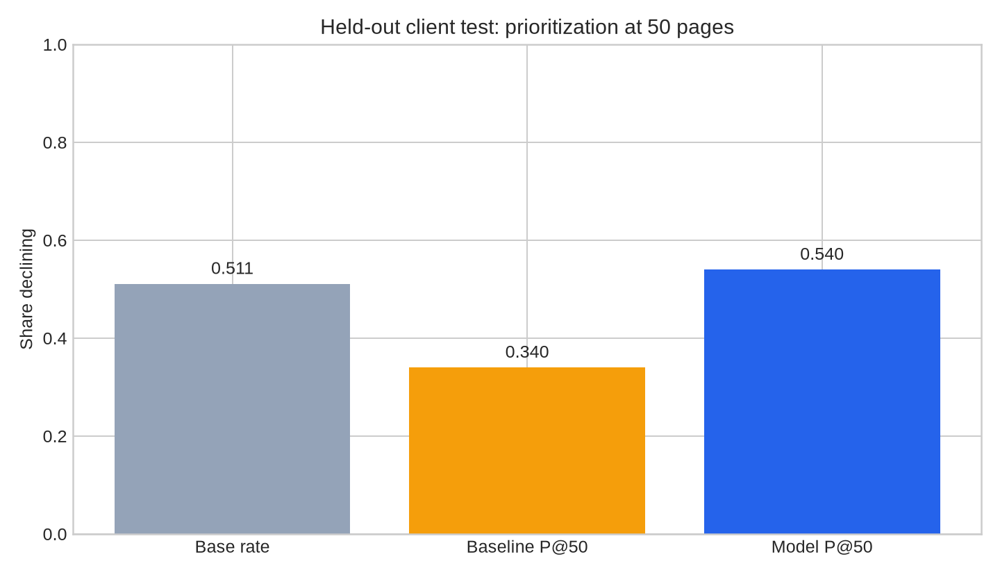
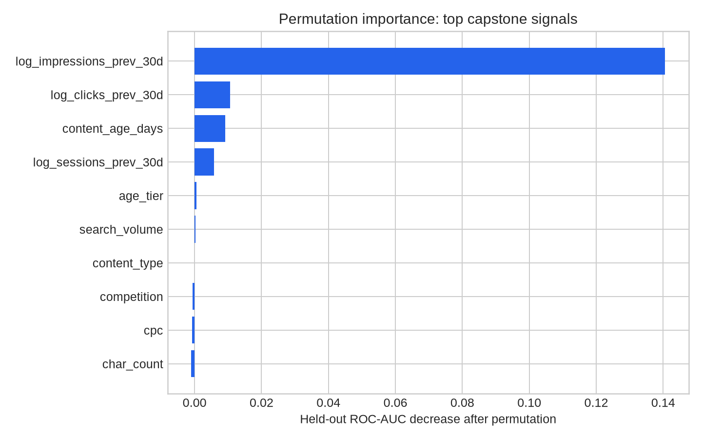

Abstract
This project asks whether an SEO or content editor can use page context and prior-month signals to prioritise a review queue for potentially declining content. It uses an anonymised snapshot of 30,000 content pages across 32 pseudonymised clients and evaluates a leakage-aware model on seven entirely held-out clients. The model reached Precision@50 = 0.540, compared with 0.340 for a transparent visibility, freshness, and content-thinness baseline. Because the held-out decline base rate is already 0.511, this is a modest prioritisation improvement—not an automated-action threshold, a causal estimate, or a prediction of Google’s algorithm.
1. Problem framing
Content teams often have more ageing pages than they can refresh. A simple heuristic can flag stale pages, but it may overlook the combination of prior visibility, content age, freshness, and search context that makes a page worth investigating. This capstone studies one narrow operational decision: which pages should appear first in an editor’s limited review queue?
The unit of analysis is one pseudonymised content page. The target is an observed current-snapshot decline proxy: trend_direction == "down", defined in the starter dataset as the latest 30 days of impressions being more than 20% below the preceding 30 days. The primary score is Precision@50 on clients unseen during training, reported next to the target prevalence so the result stays in context.
2. Data and methodology
The analysis uses only the repository’s bundled anonymised starter dataset. It contains no client names, domains, URLs, page titles, or private queries. Pseudonymous IDs are used only for output reference and client-grouped evaluation; they are never model features.
| Design choice | Implementation | Why it matters |
|---|---|---|
| Evaluation split | GroupShuffleSplit, 20% test set, seed 42 | All pages for seven clients are held out, testing whether the approach transfers beyond clients seen in training. |
| Target | trend_direction == "down" | Defines a current-snapshot decline proxy; it is never used as an input. |
| Feature policy | Prior-30-day activity; page age/freshness; content/search context | Uses information that precedes or does not overlap the outcome window. |
| Leakage exclusions | Label fields, latest-30-day signals, 90-day totals/rates, IDs, provider/model metadata | Prevents direct target leakage and overlap with the outcome period. |
| Model | Random forest, 300 trees, class balancing, missingness-aware preprocessing | Captures non-linear combinations while retaining a reproducible specification. |
| Baseline | 50% prior visibility + 30% staleness + 20% thinness | Provides a transparent label-free comparison on the same test pages. |
Numeric missing values are median-imputed with missingness indicators. Categorical missing values are explicitly represented as missing; no missing measurement is silently converted to zero.
3. Held-out results
The table and chart below compare the learned model with the transparent baseline on exactly the same seven held-out clients (6,163 pages). The baseline produces 17 observed-decline pages among its first 50 recommendations; the model produces 27.
| Metric | Baseline | Model |
|---|---|---|
| Precision@50 | 0.340 | 0.540 |
| Precision@100 | 0.340 | 0.460 |
| ROC-AUC | — | 0.659 |
| Average precision | — | 0.616 |

4. Interpretation
Permutation importance on the held-out clients indicates that prior-month impressions contribute most to the model’s discrimination: permuting log_impressions_prev_30d decreases ROC-AUC by about 0.141. Prior-month clicks, content age, and prior-month sessions add much smaller incremental contributions.

Content type, search-volume context, and content-length measures had near-zero or negative permutation importance after the prior-window signals were included. That negative result is operationally useful: in this split, they did not materially improve discrimination beyond existing visibility and engagement context.
5. Limitations and honest framing
- The label describes an observed decline within the current snapshot; it does not establish a future traffic forecast.
- The analysis cannot show that refreshing a page causes traffic to recover. A controlled intervention or causal design would be required.
- One grouped client holdout is a useful transfer check but not a full multi-period or time-aware validation programme.
- Permutation importance is associative, not causal; it describes what the model used in this evaluation split.
6. Recommendation
An editor should review the first 50 entries in the generated queue, starting with pages that pair measurable prior visibility with an actionable issue such as staleness or short content. The appropriate recommendation is review for refresh, not automatic refresh. During review, the editor should inspect search intent, factual currency, query coverage, and on-page quality before changing a page.
The result is most useful as a consistent first-pass triage mechanism. The next research extension should use a forward outcome window from the full warehouse and a time-aware evaluation design to test whether the ranking predicts a subsequent decline rather than characterising the current snapshot.
7. Reproducibility and data credit
The code, notebook, report, and generated figures are available in the project repository. The analysis uses fixed random seed 42 and reads only the bundled anonymised starter data.
pip install -r requirements.txt
python work/scripts/run_capstone.pyThis capstone uses the FlyRank ML Internship anonymised starter dataset. For the feature definitions and data-use context, see the repository’s data dictionary and data-use policy.